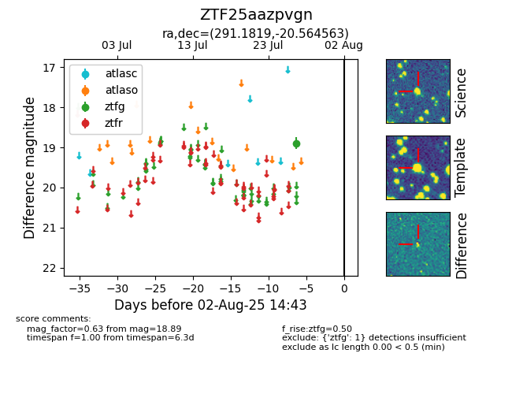

Target ZTF25aazpvgn at 2025-08-02 14:43, see:
FINK: fink-portal.org/ZTF25aazpvgn
Lasair: lasair-ztf.lsst.ac.uk/objects/ZTF25aazpvgn
ALeRCE: alerce.online/object/ZTF25aazpvgn
alt names
ZTF25aazpvgn (ztf,fink)
coordinates:
equatorial (ra, dec) = (291.1819,-20.56456)
galactic (l, b) = (17.7825,-16.30681)
photometry
last ztfg=18.89
1 ztfg detections
